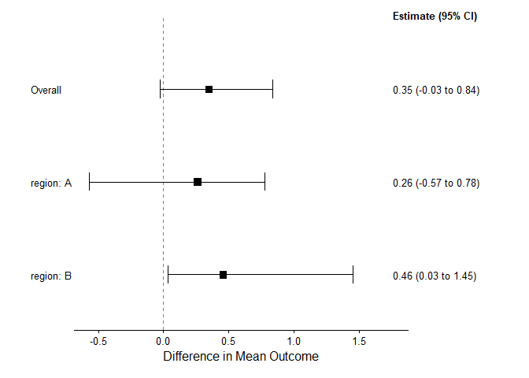

The goal of bonsaiforest2 is to simplify fitting and interpreting Bayesian models for subgroup analysis in clinical trials. It leverages the power of the brms package to:
- Distinguish between prognostic (baseline predictors) and predictive (treatment effect modifiers) factors.
- Apply differential shrinkage priors (like Horseshoe or R2D2) to explore subgroup effects robustly.
- Calculate interpretable marginal treatment effects using a counterfactual approach.
- Generate publication-ready forest plots.
Installation
You can install the development version of bonsaiforest2 from its GitLab repository:
# install.packages("remotes")
remotes::install_github("openpharma/bonsaiforest2")Example
This is a basic example showing the main workflow: fitting a simple continuous outcome model with shrinkage on a subgroup interaction.
library(bonsaiforest2)
library(brms) # Needed for backend
# 1. Minimal data setup
set.seed(123)
n <- 50 # Small n for README example
sim_data_readme <- data.frame(
outcome = rnorm(n),
trt = factor(sample(0:1, n, replace = TRUE)),
age = rnorm(n, 50, 10),
region = factor(sample(c("A", "B"), n, replace = TRUE))
)
# 2. Fit a simple model (use very few iterations for speed!)
# Shrink the treatment:region interaction
fit <- run_brms_analysis(
data = sim_data_readme,
response_formula_str = "outcome ~ trt",
response_type = "continuous",
unshrunk_prognostic_formula_str = "~ age", # Adjust for age
shrunk_predictive_formula_str = "~ trt:region", # Explore region interaction
chains = 1, iter = 50, warmup = 25, refresh = 0, # Keep it FAST
backend = "cmdstanr" # Optional: Specify backend if needed
)
# 3. Summarize marginal effects (will auto-detect 'region')
effect_summary <- summary_subgroup_effects(
brms_fit = fit,
original_data = sim_data_readme,
trt_var = "trt",
response_type = "continuous"
)
# 4. Plot the results
plot(effect_summary) # Display plot
Summarized Effects: